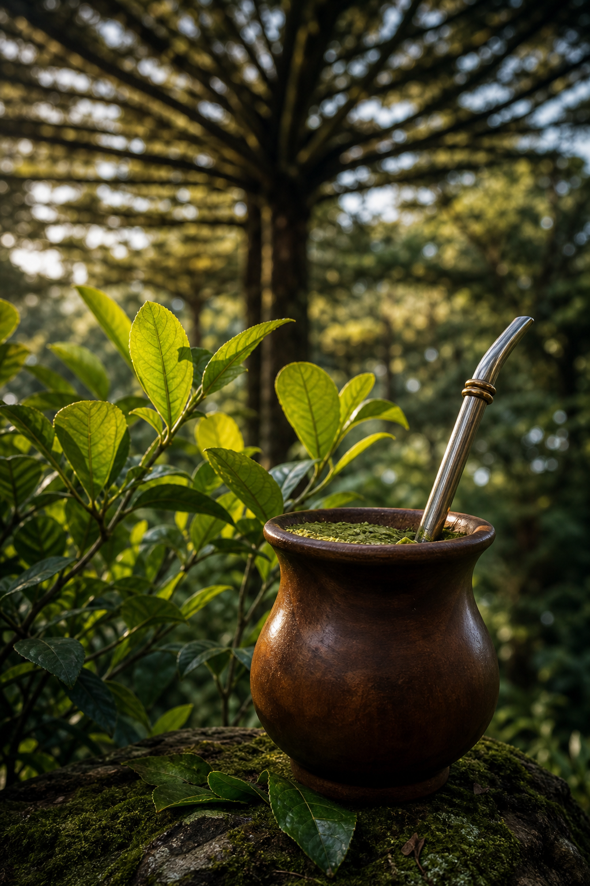

Tom de voz
Direto, convidativo e informativo. Fala com visitantes de várias idades e convida à descoberta, sem simplificar saberes de povos e comunidades ligados à erva-mate.
Linguagem viva e legível para o totem por toque e para o site público, a partir das cores e símbolos da marca.

O sistema parte do desenho da marca: verde de erval, dourado das folhas e marrom da cuia. Imagens devem valorizar folhas, mata, utensílios e a roda de mate, com escala humana e luz natural.
Direto, convidativo e informativo. Fala com visitantes de várias idades e convida à descoberta, sem simplificar saberes de povos e comunidades ligados à erva-mate.
Cantos de 16px em superfícies e cards. Botões sempre em pílula. Um único acento dourado para destaque. Nunca depender só de hover: estados ativos e pressed são obrigatórios no totem.
#1B583A
Ações primárias, navegação e estados ativos.
#B4892E
Destaques, foco e convite a descobrir.
#71442B
Narrativa, memória e materialidade.
#F5F8F3
Base de leitura e áreas de respiro.
Títulos com peso alto e ritmo compacto. Corpo com alto contraste para leitura em pé no totem e em celular.
Família: Aptos ou Segoe UI (ambiente Windows do totem). Evita dependência externa na validação. Pode ser revisada com a identidade final.
Sobre fundo escuro
Antes da colonização
Ponto de partida sobre povos originários e a erva-mate.
Séculos XIX e XX
Cartões de memória para depoimentos e documentos.
Hoje
Quatro módulos do plano. Sem numeração decorativa. Cada tile é um alvo de toque grande com título, frase curta e ação clara.
Canvas de referência: 1080 × 1920 (retrato). Use ?mode=totem ou o botão Simular totem. Informações essenciais nunca ficam só no hover.
Alvo mínimo 48px. Controles principais 64-80px. Espaço entre alvos ≥ 12px.
Botão Início sempre visível no canto. Retorno automático após inatividade (padrão 90s).
Quando ocioso, overlay “Toque para começar” cobre a tela e reinicia no início.
Esqueletos no formato do conteúdo final, sem bloquear a navegação.